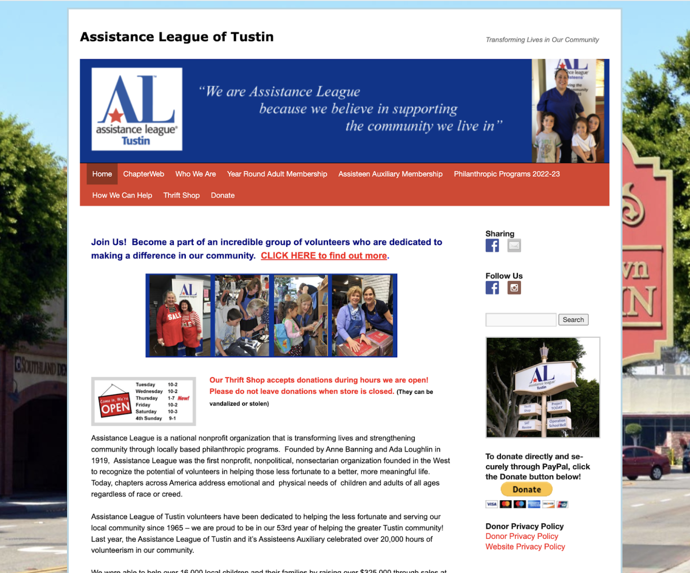

Responsive Redesign
Redesigning the Assistance League of Tustin website
Identifying Usability Problems
The website I chose is for the local charity organization based in Tusin, California.
Website link:
https://www.altustin.org/
I chose this website because it is extremely outdated (from the fonts, to the images,
to the navigation), creating a poor experience for the user and challenges navigating,
especially when on smaller phone screens.

Usability
The usability of this website is poor, for many reasons. First, the font size across the
site is small, making it difficult to read for users. Secondly, while the site does include
a menu at the top to switch between pages, these headings are challenging to read, and
(especially when on a mobile device) clicking between the different headings is difficult.
The headings in the navbar are challenging to read as well.
Learnability
The small size of the headings (and no differentiation / separation between the different options
using color, boxes, or lines) makes accomplishing switching to the desired page upon the first
attempt unlikely. For members, finding the login button will also take extra time and learning
because it is difficult to find. Additionally, the “Return To Top” button at the bottom of the
page does not even work!
Memorability
Because there are so many tiny (i.e. difficult-to-read) words on this website, the memorability is
low. Again, the login button does not stand out, so even for members of the organization who might
use this website often, will not remember where / how to login. Understanding what (the color, font,
underline) means “link” vs. “not-a-link” is inconsistent, making remembering how to find links on
this page difficult as well.